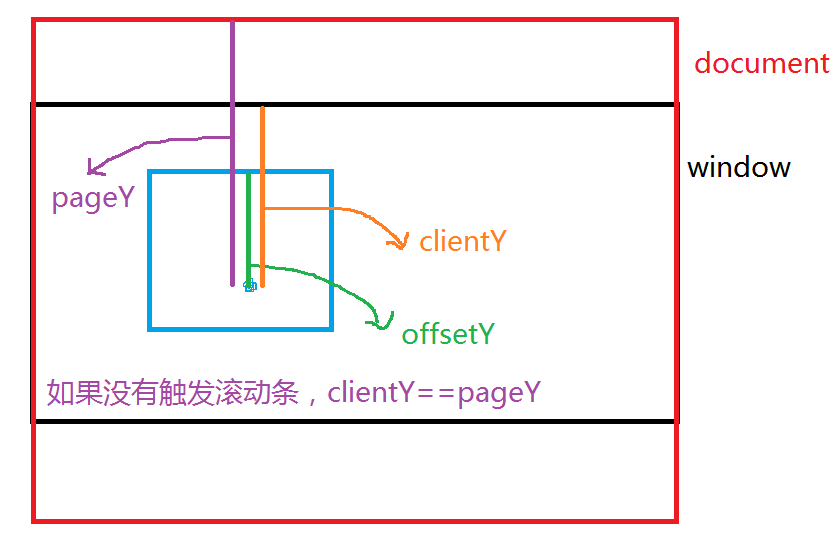

梳理知识点
对象
构造函数
数组
sort
字符串
Math对象 random()
Date()
BOM window --- location history document event navigator screen
DOM节点的动态操作 remove()
getAttribute()
2、事件对象event
事件 ： 对页面上某个元素的操作 onclick onmouseover....
当对页面的某个元素添加某个事件操作时，才会产生一个事件对象event
不同的事件产生的事件对象不同
事件对象 ： e || window.event;
3、鼠标事件对象的属性（坐标属性）
clientX/clientY
pageX/pageY
offsetX/offsetY

4、button属性(扩展)
button属性 ： 用来确认用户操作的是左键 滚轮 邮件
高版本浏览器：
左键 0
滚轮 1
右键 2
ie6 7 8：
左键 1
滚轮 4
右键 2
兼容button属性
function getButton(evt){ 事件对象参数
var e = evt || event;
if( evt ){ 高版本浏览器
return e.button;
}else if( window.event ){ ie6
switch(e.button){
case 1 : return 0;
case 4 : return 1;
case 2 : return 2;
}
}
}
5、键盘事件对象
属性 ： keyCode 获取键盘的按键值
在onkeypress事件中， 如果按住ctrl + 回车 ，此时，回车键的keyCode的值为10 ， 默认 回车键的keyCodez
//当键盘按下时 会获取到功能键的键值
document.onkeypress = function(e){
var e = e || event;
//如果按下的是ctrl + 回车 就发送
if( e.ctrlKey && e.keyCode == 10 || e.keyCode == 13 ){
alert("发送");
}
}
功能键 ： ctrlKey altKey shiftKey
6、事件流
当产生某个事件时，事件从子元素向父元素触发或从父元素向子元素触发的过程 称为事件流
事件流的两种模式 ：
事件冒泡 --- 从子元素向父元素触发 small ---> big --> body ---> document ---> window
事件捕获 --- 从父元素向子元素触发 window -- > document --- > body --- > big --> small
7、事件冒泡
当触发某个事件时，同样的事件会向父级元素触发，这个过程就叫做事件冒泡
不是所有的事件都会产生冒泡， 例如 ： onload onfocus onblur
阻止事件冒泡兼容：
e.stopPropagation ? e.stopPropagation() : e.cancelBubble = true;
8、阻止浏览器的默认行为
邮右键单击浏览器，会弹出一个菜单
拖拽文字
超链接 空链接--刷新
submit按钮 刷新页面
阻止浏览器的默认行为 ：
e.preventDefault ? e.preventDefault() : e.returnValue=false;
9、事件绑定 -- 如何为某个元素添加某个事件
1、<input type='button' onclick = 'fn()'>
2、obj.onclick = function(){
}
3、通过 addEventListener() 绑定事件 ---- 事件监听
用法 ：obj.addEventListener("事件去掉on",function(){})
第一个参数 事件
第二个参数 事件处理程序
第三个参数 布尔值 默认 false 控制事件冒泡还是事件捕获 true -- 事件捕获
事件监听的好处 ： 可以为同一个对象添加多个同样的事件
可以根据事件监听的方法确定到底是事件的冒泡还是事件捕获
ie的事件监听： attachEvent() 不能实现捕获
obj.attachEvent("onclick",function(){
})
10、事件冒泡和事件捕获的执行顺序（扩展）
如果一个元素 既有事件冒泡，又有事件捕获，先执行冒泡？执行捕获？？
先捕获 后冒泡